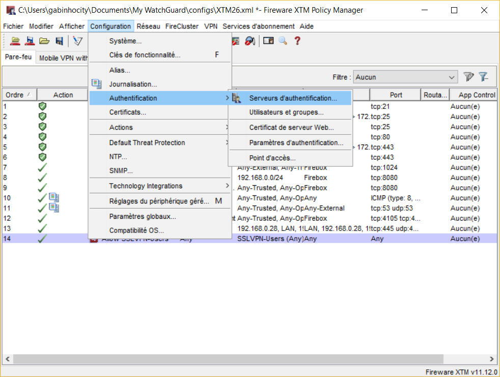

Chez moi je dispose d’un WatchGuard XTM 26 qui est connecté derrière la box de mon fournisseur internet (SFR).
Je vais vous montrer comment comment configurer une liaison VPN pour accéder à votre réseau depuis l’extérieur.
Voici un schéma rapide qui vous montre comment est organisé le réseau chez moi
J’ai deux réseaux :
- Un premier réseau local configuré sur le modem de mon fournisseur internet afin de connecter les différents équipements ( Ordinateurs, Imprimantes, tablettes) à internet
- Un second réseau derrière mon watchguard qui est connecté à mon serveur DELL T420 sur lequel j’ai installé un Esxi pour mes VM
Avant de parametre le VPN sur Watchguard il existe trois type de VPN : VPN IPSec, VPN Basique (PPTP, L2TP) et le VPN mobile avec SSL
Voici un schéma que j’ai pris sur le site de watchguard qui explique la différence entre les 3 types de VPN

Maintenant nous pouvons commencer notre configuration. Il faut se connecter à votre watchguard grâce à l’application Watchguard System Manager
Cliquer sur l’icone de la Policy Manager
Cliquer sur VPN > Mobile VPN > SSL
Une nouvelle interface de configuration du VPN s’ouvre
Il faut cocher la case “Activer Mobile VPN with SSL”
Dans la partie Adresses IP Firebox remplacer l’IP Principale 95.152.23 par l’adresse IP public de votre box internet que vous pouvez obtenir rapidement en allant sur le site whatismyipaddress.com
Dans la rubrique “Pool d’adresse IP virtuelles” il s’agit de la plage IP qui sera fournit aux utilisateurs qui vont se connecter par VPN. Vous pouvez la modifier si vous ne voulez pas utiliser cette plage mais ne rentrez surtout pas une plage qui est déjà utilisée dans votre réseau.
Avant d’enregistrer nos modifications on va aller sur l’onglet Avancé
Par défaut le canal de données est sur le port 443, on va le modifier et le mettre sur le port 1024 par exemple.
Si vous avez un domaine et un serveur DNS vous pouvez les renseigner dans la partie Serveur DNS et WINS
Vous valider vos modifications sur la touche OK et si vous avez le message suivant cliquez sur Oui
On constate la création d’une nouvelle stratégie Allow SSL VPN-Users pour autoriser les utilisateurs du VPN à se connecter à toutes les ressources du réseau
Pour ajouter les utilisateurs qui vont se connecter au VPN il faut aller dans Configuration > Authentification > Serveurs d’authentification 
Il existe 5 types d’authentifications : nous allons commencer par voir comment configurer le système l’authentification de la Firebox.
Cliquer sur Ajouter dans la rubrique Utilisateurs
Renseigner les informations de connexion
Dans la partie groupes d’authentification Firebox ajouter votre nouvel utilisateur comme membre et Cliquer sur OK pour valider la création de votre utilisateur
Maintenant vous pouvez enregistrer vos modifications sur le Watchguard.
Lorsque vous êtes connecté à un autre réseau ( vous pouvez mettre votre téléphone en modem et vous connecter en WIFI), ouvrez le navigateur de votre choix et saisir l’adresse suivant https://93.2101540198:1024 ( remplacer cette IP et le port par l’adresse IP public et le port que vous avez renseigné sur votre watchguard lors de la configuration du VPN SSL)
Ajouter l’exception car le certificat de votre watchguard est auto signé
Se connecter à l’aide de de l’identifiant et du mot de passe de l’utilisateur que vous avez créé
On télécharge l’application Windows ou Mac
Installez l’application et lancez la connexion grâce à l’icone
Rentrez les informations de connexion et cliquer sur connecter
Pour vérifier si vous êtes bien connecté l’icone du watchguard doit être passé au vert

{kind=link}
{kind=link}
{kind=link}
{kind=link}
{kind=link}
{kind=link}
{kind=link}
{kind=link}
{kind=link}
{kind=link}
{kind=link}
{kind=link}
{kind=link}
{kind=link}
{kind=link}
{kind=link}
{kind=link}
{kind=link}
{kind=link}
{kind=link}
{kind=link}
{kind=link}